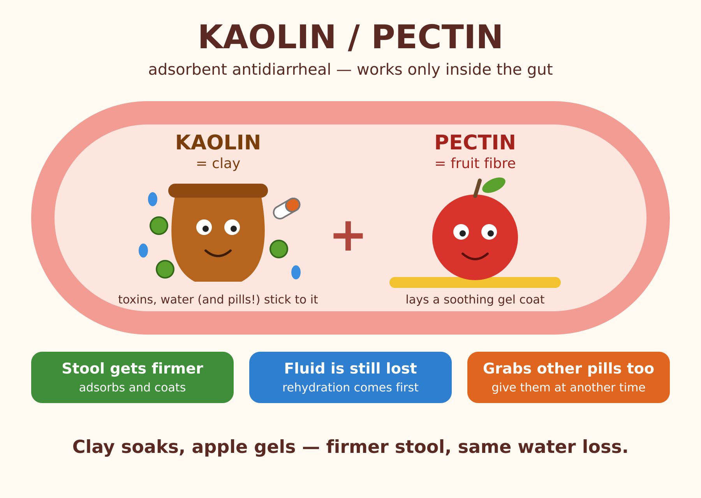

Kaolin/Pectin
1 / 9Kaolin/Pectin
Adsorbent antidiarrheal: clay + fruit fibre that works only inside the gut
Clay soaks, apple gels — firmer stool, same water loss.
Šajā tēmā
What is it?
Hydrated aluminium silicate — a natural clay powder
A carbohydrate extracted from fruit — apples, citrus peel
GI adsorbent / protectant, given as an oral suspension
Old brand: Kaopectate — since 2003 the US product contains bismuth subsalicylate instead
How it works
Binds water and, reportedly, bacterial toxins in the gut lumen
Acts as a demulcent — a soothing layer on irritated mucosa
Not absorbed into the blood — leaves with the faeces
Use
Symptomatic relief only — it does not treat the cause
Popular supportive care for small animals, foals, calves, lambs and kids
Limits
Changes stool consistency, but does not reduce fluid or electrolyte loss and does not shorten the illness
Rehydration comes first!
Clinical studies have not shown a clear benefit
Bismuth subsalicylate has better evidence in acute diarrhoea
Side effects and cautions
The main side effect — especially in elderly or debilitated patients
Contraindicated in intestinal obstruction
Caution when diarrhoea comes with fever
Interactions
It adsorbs medicines just like toxins → lower bioavailability
Give other oral medicines at a different time
Digoxin (tablets)
Lincomycin, clindamycin
Quinidine
Picture
